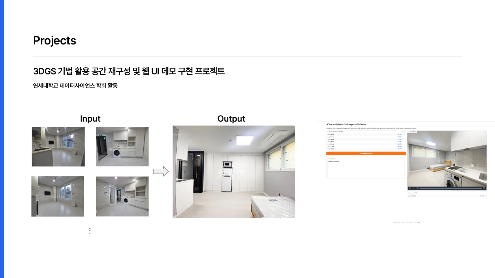
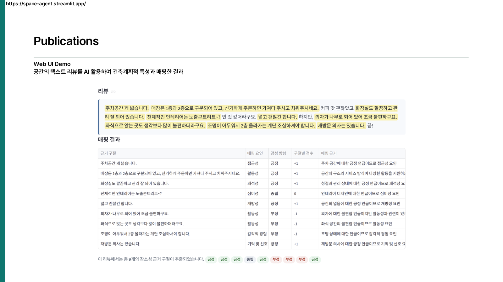

Compared sparse-view 3D reconstruction methods using seven to eight indoor images, with InstantSplat as a baseline. Built a Gradio interface for generating and inspecting reconstructed scenes.
3D Gaussian Splatting / InstantSplat / PyTorch / Gradio

2026 / Spatial Data Analysis
Quantifying Place Experience from Spatial Reviews
Developed an LLM-assisted pipeline that maps qualitative place reviews to ten spatial factors and produces interpretable scores. The work received a Best Presentation Award at the Korean Institute of Interior Design Conference.
LLM-based text analysis / Evaluation framework / Streamlit

2024 / Generative AI
Architect-Specific Building Image Generation
Fine-tuned Stable Diffusion 1.5 and evaluated how reinforced data processing changes the generation of architect-specific visual characteristics. Contributed experiments and analysis to an IEEE MIT URTC paper.